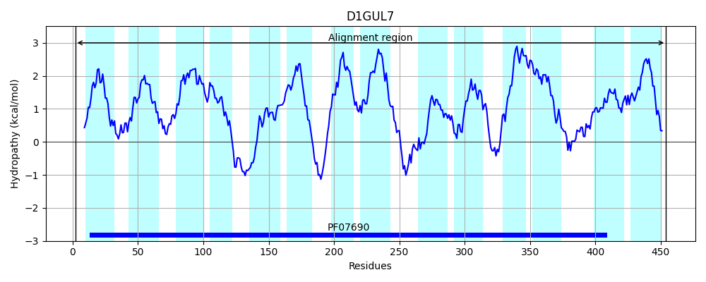

Hit Accession: D1GUL7
Hit TCID: 2.A.1.3.59
Hit Description: gnl|BL_ORD_ID|3013 gnl|TC-DB|D1GUL7|2.A.1.3.59 Putative transporter protein OS=Staphylococcus aureus (strain TW20 / 0582) GN=norC PE=4 SV=1
Mach Len: 459
e:0.000000
Query TMS Count : 14
Hit TMS Count: 14
TMS-Overlap Score: 12.150000
Predicted Substrates:CHEBI:35190;diterpene, CHEBI:23765;quinolone
BLAST Alignment:
Score: 1413 , Bit scores: 548 bits, E-value: 0.0e+00, Alignment length: 459, Percentage identity: 60
Query: 4 SKQFRGDNRLLLGIVLGVITFWLFAQSLVNLVVPLQSTYSSDVGTINIAVSLSALFAGLFIVGAGDVADKFGRVKITYVGLILNVVGSLLIIITPLPAFLIIGRIIQGLSAACIMPSTLAIINEYYIGTRRQRALSYWSIGSWGGSGICTLFGGLMATYIGWRSIFVVSILLTLLAMYLIKHAPETKAEPIKGMKAEAKKFDVIGLVILVVTMLSLNVIITQTSHFGLVSPLILGLIVVFICSLVGFVYYENKIKHPLVDFSIFKNRGYSGATISNFLLNGVAGGALIVINTYYQQQLGFNSSQTGYISLTYLITVLSMIRVGEKILSQHGPKRPLLLGSGFTVIGLILLSLTFLPEVWYIISSIVGYLLFGTGLGLYATPSTDTAVASAPDDKSGVASGVYKMASSLGNAFGVAVSGTVYTVLAANLNLNLGGFTGMMFNALLAIVAFLVILLLVPKN 462
++ +RG N+L+LGIVLGVITFWLFAQSLVN+V LQ ++ +D+GTI+IAVSL+ALF+G+F+VGAG +ADK GRVK+T +GL+L+++GS LIIIT LPA LI+GRIIQG+SAACIMPSTLAI+ YY G RQRALSYWSIGSWGGSGIC+LFGG +AT +GWR IF+ SI++ +L+M LIK PETK+E KFDV GL++LVV +LSLNV+IT+ + G S GLI + I + F+ E K+ +PL+DF +F+N+ Y+GATISNFLLNGVA G LIV NT+ QQ LG+ + Q GY+S+TYLI VL MIRVGEK+L + G KRP+LLG+ +IG+ L+SL FLP ++Y+IS +VGYL FG GLG+YATPSTDTA+++AP DK GVASG+YKMASSLG AFGVA+SG VY A +++ G + N L+ I+AF+ IL +P +
Sbjct: 2 NETYRGGNKLILGIVLGVITFWLFAQSLVNVVPNLQQSFGADMGTISIAVSLTALFSGMFVVGAGGLADKIGRVKMTNIGLLLSIIGSALIIITNLPALLILGRIIQGVSAACIMPSTLAIMKTYYEGAERQRALSYWSIGSWGGSGICSLFGGAVATTMGWRWIFIFSIIVAVLSMLLIKGTPETKSE-----VTNTHKFDVAGLIVLVVMLLSLNVVITKGAALGYTSLWFFGLIAIVIVAFFIFLNVEKKVDNPLIDFKLFENKPYTGATISNFLLNGVA-GTLIVANTFVQQGLGYTALQAGYLSITYLIMVLLMIRVGEKLLQKMGSKRPMLLGTFIVIIGIALISLVFLPGIFYVISCVVGYLCFGLGLGIYATPSTDTAISNAPLDKVGVASGIYKMASSLGGAFGVAISGAVYAGAVAATSIHTGAMIALWVNVLMGIMAFIAILFAIPND 454 | Protein Hydropathy Plots: |
|---|
|  |
Pairwise Alignment-Hydropathy Plot:
|
|---|
|